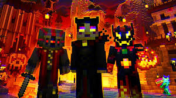
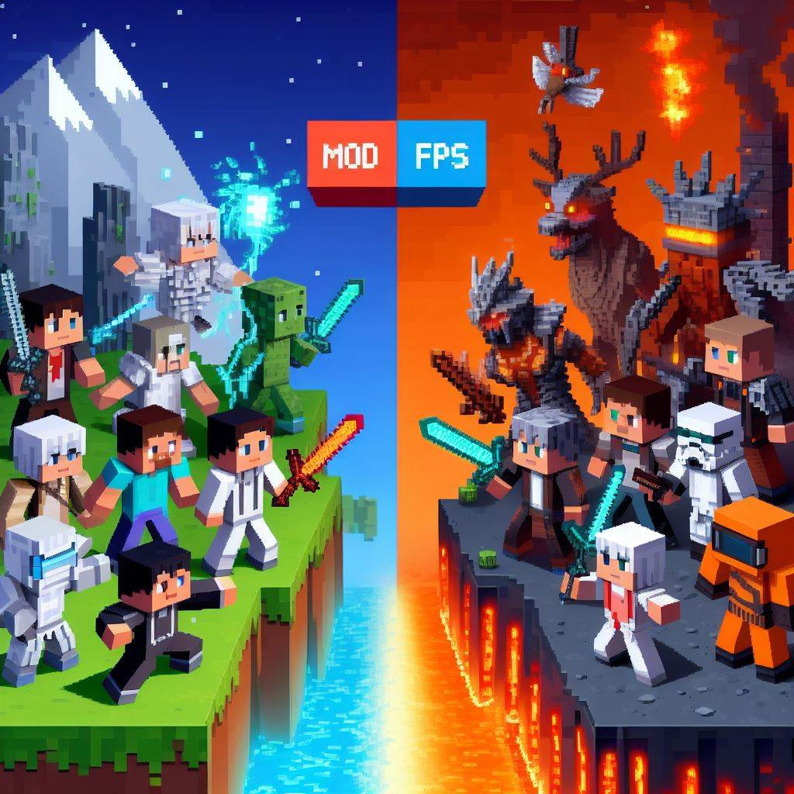
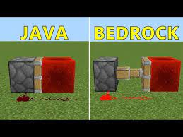
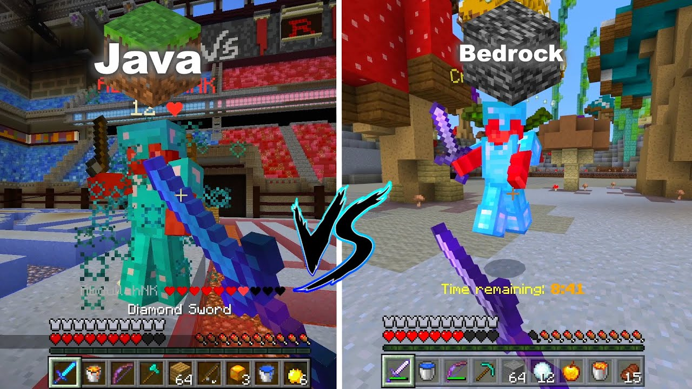
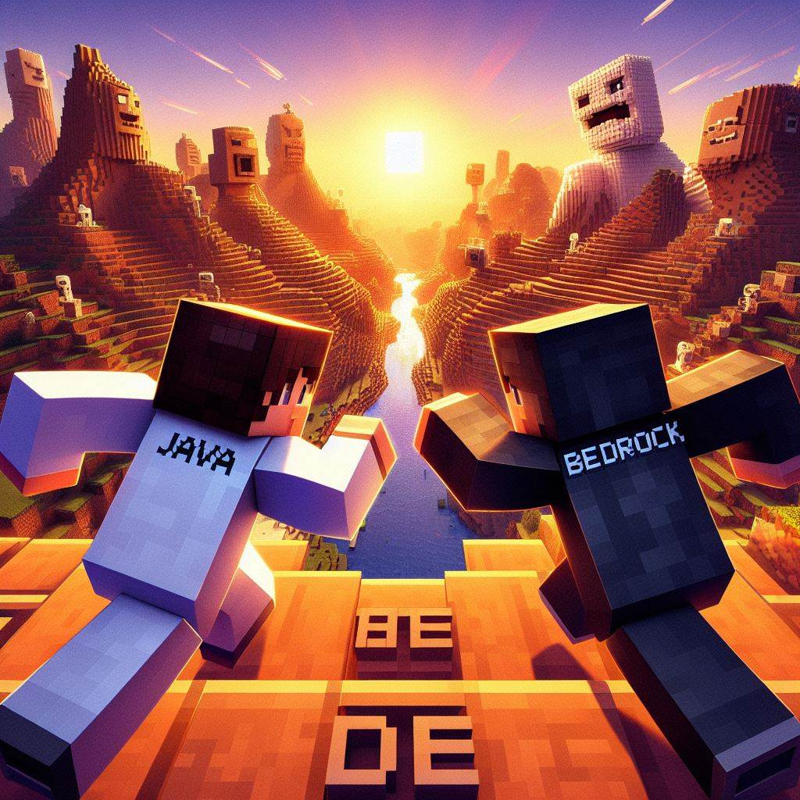

|
Lanzada en 2009 y desarrollada en Java, Java Edition utiliza el formato de mundo Anvil y tiene
un sistema de comandos más complejo que incluye características como /stats y /team. |
lanzada en 2017, Bedrock Edition reúne múltiples plataformas en una base de código común y
utiliza el formato LevelDB para los mundos. |

Las cosas a las que puede acceder Java y Bedrock
|
Además, Java Edition permite a los jugadores crear servidores personalizados y modificar el
juego a un nivel más profundo gracias a su accesibilidad a través de la programación en Java
|
Bedrck posee variedad de expansiones disponibles en la tienda del juego para personalizar
aspectos, texturas, mundos y añadir nuevas mecánicas a Minecraft Bedrock Edition.
|
Diferencias en la Jugabilidad
|
Ofrece una jugabilidad más tradicional y profunda, con mayor compatibilidad con mods y
características avanzadas. Sin embargo, puede requerir más recursos de hardware y ser menos
eficiente en dispositivos de gama baja debido a su diseño más antiguo y al uso de Java como
lenguaje de programación. |
Ofrece una jugabilidad más moderna y accesible, con mayor flexibilidad en la entrada del jugador
y una optimización que suele funcionar mejor en hardware de gama baja.
Además, su diseño
modular y la división de renderizado y activación de piezas contribuyen a una mayor eficiencia
en dispositivos con recursos limitados. |

Diferencias entre Mecanicas a la hora de jugar
Redstone
|
El comportamiento de la redstone más predecible, basado en la simulación de energía eléctrica.
La potencia de la señal se debilita con la distancia y a través de componentes como los
repetidores.
los mecanismos ofrecen una amplia variedad de componentes y mecanismos avanzados desarrollados
por la comunidad. |
El comportamiento de la redstone puede comportarse de manera diferente debido al motor del
juego, con diferencias sutiles en cómo se propagan las señales y funcionan algunos circuitos.
,algunos diseños específicos de Java pueden no funcionar igual debido a diferencias en la
implementación de Redstone, pero ha mejorado con el tiempo.
|

Mecánicas de combate
| El sistema de combate en Java Edition es más complejo y detallado. No se puede
utilizar el "spam-clicking" para atacar, lo que puede cambiar la dinámica de las peleas y
enfrentamientos. |
En Bedrock Edition, el sistema de combate es más simplificado y se basa en un temporizador de
ataque más uniforme.Incluye la posibilidad de usar técnicas como el "spam-clicking" (hacer clic
rápidamente) para atacar, así como movimientos especiales con armas y herramientas.
|

Ciclo de actualizaciones
| Suele recibir actualizaciones más frecuentes y tempranas, incluyendo nuevas
características, mecánicas y contenidos antes que Bedrock Edition.
|
Aunque también recibe actualizaciones periódicas, estas pueden tardar un poco más en
implementarse en comparación con Java Edition.
|
